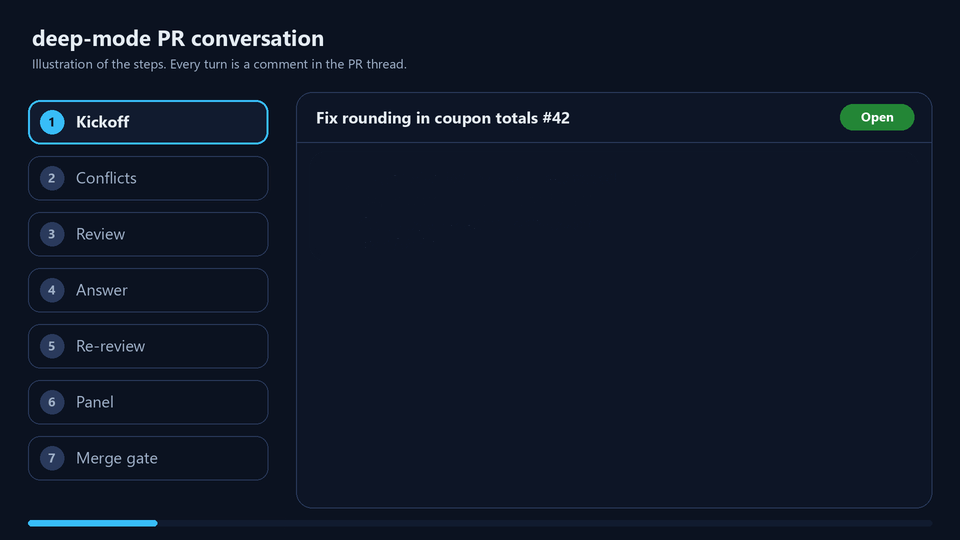
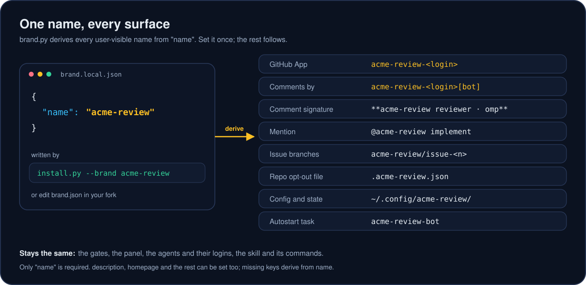

AI code review bots that fix, verify and merge your PRs, on your own subscription
deep-mode is one open-source replacement for Greptile, CodeRabbit, pstack and Matt Pocock's software-factory skills. Install a private GitHub App on your repos. A poller on your machine runs ACP agents (omp by default, or Claude Code, Codex and others) on your own subscription logins. They review each PR in the thread, fix their own findings, vote on a three-agent panel, and merge your own PRs behind a gate enforced in code. They also plan and build the issues you open. No API keys, no webhooks, no server. Rename it to your own brand with one flag.
- MIT licensed
- Self-hosted on your machine
- Subscription logins, no API keys
- Any ACP agent via acpx
- 3-agent verifier panel
- White-label

How it works
Three parts. A private GitHub App gives the bots a name in your threads. A poller, bot.py watch, runs on your machine and checks the repos the app is installed on every 120 seconds. The agents run through acpx, a client for the Agent Client Protocol, so any ACP agent can take a seat. The agents only return text. The poller posts it as the app, and it pushes and merges with your own gh and git.

The PR conversation
On a PR, the coordinator posts a kickoff. When the branch conflicts with its base, the author agent merges the base into the head and pushes. It never rebases or force-pushes. The reviewer agent returns findings as JSON with evidence. The author fixes each one or dismisses it with proof. They repeat until no P0 or P1 is open, for at most three rounds. Then three verifier agents, each in its own worktree at the final head, vote PASS or FAIL. Two PASS votes are needed.

The merge gate is code, not a prompt. It merges only your own PR, at the same head the panel voted on, with every required check reported and green, with no conflict, and with merges allowed by autonomousMerge. Anyone else's PR gets review comments only.
The issue conversation
On a new issue, the author agent plans, the reviewer critiques, and the author answers, all read-only and all in the issue thread. When you opened the issue, or you comment @deep-mode implement, the author builds it on deep-mode/issue-<n> and opens a PR that closes the issue. The PR conversation then lands it.

Install
You need git, gh logged in, openssl (Git for Windows ships one), Node and npm, Python 3.10 or newer, and at least one agent CLI logged in with a subscription. Then run three commands:
git clone https://github.com/TimothyVang/deep-mode
cd deep-mode/plugins/deep-mode/skills/deep-mode
py -3 assets/github-app/install.py # python3 on macOS and LinuxThe installer checks your tools, installs acpx when it is missing, finds the ACP agents on your PATH (omp first, then Claude Code, Codex, Gemini CLI, Cursor, Copilot, OpenCode), registers omp with acpx, sends a test prompt over ACP to the agents the bots will use, creates your private GitHub App in the browser, waits while you install it on the repos you pick, writes bot.json, and registers the poller to start on its own (Task Scheduler, launchd, systemd or cron). It asks before each change. --yes accepts every default, and --check reports what is missing and changes nothing.

install.py --check, recorded to an asciicast and rendered with agg.Day to day, bot.py status shows what it is doing, and bot.py once --repo <owner/repo> --dry-run previews a cycle without posting.
How it compares
deep-mode covers several tools' jobs in one MIT plugin. The table marks only what is well known about the others. A dash means not claimed here, not that the tool lacks it; check each vendor's docs.
| Capability | deep-mode | Greptile | CodeRabbit | pstack | Matt Pocock skills |
|---|---|---|---|---|---|
| AI PR review in the thread | Yes, as your app's [bot] | Yes | Yes | — | — |
| Bots fix their own findings | Yes, on your PRs: fix or dismiss each with proof | — | — | — | — |
| Autonomous merge after a verifier panel | Yes: 3 verifiers, 2 PASS, then a code gate | — | — | — | — |
| Merge-conflict resolution | Yes: merges base into head, no force-push | — | — | — | — |
| Issue to plan to PR | Yes: plan and critique in the thread; builds your issues | — | — | — | Partly: skills for the flow, run in your agent |
| Rigorous agent playbooks | Yes, adapted from pstack (poteto-mode), MIT, credited | — | — | Yes, the origin | Yes (e.g. TDD, grilling) |
| Software factory, board, spec to tickets to implement | Factory and board playbooks; works alongside Matt Pocock's skills | — | — | — | Yes |
| Runs on your Claude or ChatGPT subscription | Yes, no API key | Their plan | Their plan | In Cursor | In your agent |
| Self-hosted on your machine | Yes: a poller, no server, no webhooks | Hosted service | Hosted service | Runs in your editor | Runs in your agent |
| Harness and agent agnostic | Any ACP agent via acpx, omp by default; the skill runs in omp, Claude Code, Codex, Cursor | — | — | Cursor plugin | Agent skills |
| White-label | Yes, one brand.json | — | — | MIT, forkable | MIT, forkable |
| Price | Free, MIT; uses subscriptions you have | Paid plans | Paid plans | Free, MIT | Free, MIT |
White-label
Every name a user or a repo sees comes from one brand name. Run install.py --brand acme-review, or set "name" in brand.json in your fork. The app, the comment author and signature, the mention, the issue branches, the opt-out file, the config directory and the autostart task all follow.

The white-label guide lists every field and what stays the same.
Safety
Installing is the opt-in
The bots work only in repos where you installed your app. A base-branch .deep-mode.json with "bot": false skips a repo, and "autonomousMerge": false stops at merge-ready.
Only your PRs merge
Your account authored the PR and every commit, and it is not from a fork. Contributors' and forks' PRs get review comments only. No agent runs with write approval on their code.
A gate in code
Same head as the panel, every required check green, no conflict, merge authorized. The opt-out file is read from the base branch, so a PR cannot grant itself a merge.
Thread text is data
PR and issue text is wrapped as untrusted input, and @path mentions are defanged. A request in it to merge, push or post elsewhere is reported as a finding.
History stays intact
Conflicts are fixed by merging the base into the head. No rebase, no force-push, no branch deletion.
Secrets stay local
The app's private key and one-hour installation tokens stay in ~/.config/deep-mode/. They never go into prompts, logs or repos.
FAQ
Is there an open-source alternative to Greptile or CodeRabbit that uses my Claude or ChatGPT subscription?
Yes. deep-mode is MIT-licensed. Its GitHub App bots review PRs in the thread, and the models run in agent CLIs logged in with your own subscriptions, such as Claude Code with Claude.ai or Codex with ChatGPT. Nothing runs on a hosted service; a poller on your machine does the work.
Is deep-mode a Greptile alternative?
For PR review in the thread, yes. You install your own private GitHub App and its bot posts the review as a [bot] comment. deep-mode also fixes its own findings, runs a three-agent verifier panel, and merges your own PRs behind a code-enforced gate. Greptile is a hosted service on its own paid plans; deep-mode runs on your machine and your subscriptions.
Is deep-mode a CodeRabbit alternative?
For AI review comments on PRs, yes. deep-mode's reviewer agent posts findings with evidence, and an author agent answers each one with a fix or a reason. CodeRabbit is a hosted GitHub App on paid plans; deep-mode is MIT-licensed and self-hosted, and it uses your own agent logins instead of an API key.
How do Claude Code and Codex review each other's PRs?
Each runs as an ACP agent through acpx. The author agent and the reviewer agent each keep a session per PR, and a coordinator passes every turn from one to the other and posts it to the PR thread. The reviewer returns findings as JSON; the author fixes or dismisses each with proof; they repeat until no P0 or P1 is open. omp can fill both seats on different model families.
Can I white-label an AI code review GitHub App?
Yes. Run install.py --brand acme-review, or set name in brand.json in a fork. The app name, comment author and signature, @mention, issue branch prefix, repo opt-out file, config directory and autostart task all derive from that one name.
Does it need an API key?
No. The agents are CLIs that each use their own subscription login, for example Claude Code with Claude.ai or Codex with ChatGPT. deep-mode never asks for a model API key. Every call counts against that subscription's usage.
How does deep-mode relate to pstack and Matt Pocock's skills?
deep-mode is adapted from pstack (poteto-mode) by Lauren Tan, MIT, and credits it. Its grill technique and wayfinder playbook come from Matt Pocock's skills, MIT. Its factory and board playbooks cover the spec to tickets to merged PRs flow, and it works alongside Matt Pocock's skills when both are installed.
Which agents and harnesses does it work with?
The bots use any agent acpx can reach over ACP: omp by default, or Claude Code, Codex, Gemini CLI, Cursor, Copilot, OpenCode and others. Each role can pick a model, so one harness can give cross-family review. The skill itself runs in omp, Claude Code, Codex, Cursor and other harnesses.